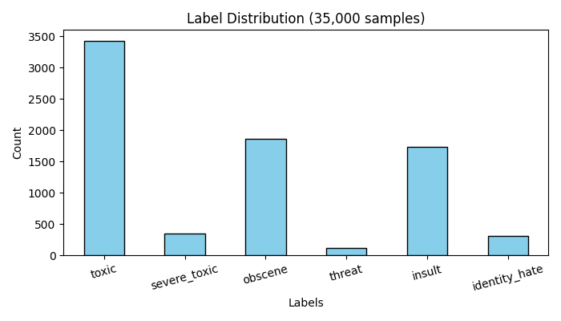
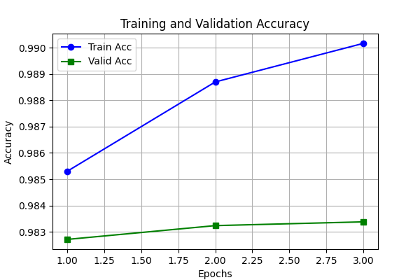
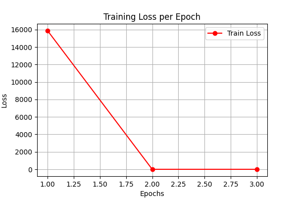

댓글 데이터 기반 악성 댓글 멀티 라벨 분류
1. 연구 배경 및 데이터 분석(EDA)
배경:
온라인 유해 댓글 자동 필터링 필요
데이터:
Kaggle Toxic Comment Dataset
분포 분석:
클래스 불균형 존재 확인

2. 전처리 및 모델 설계
데이터 정제(결측치 제거) 및 토큰 제한(128)
분석 대상 35,000건 중 28,000건 학습
3. 모델 성능 결과

